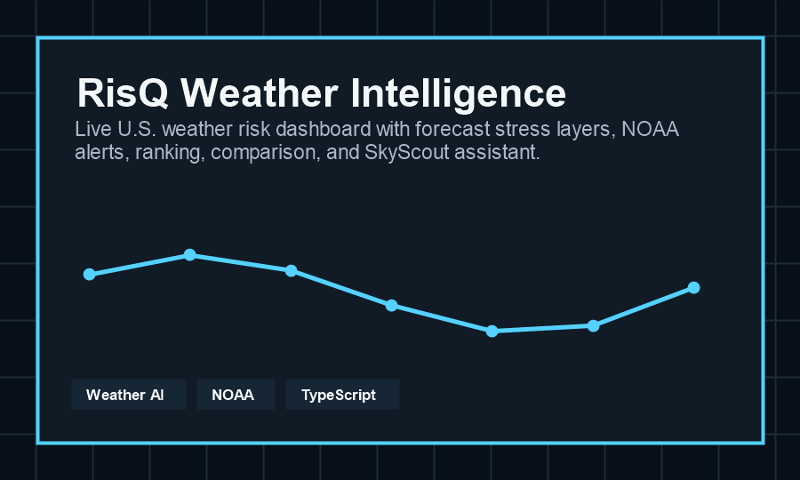

Deployed prototype with map, risk layers, alerts, comparison, and assistant workflows.
Back to work
Flagship product build
RisQ Weather Intelligence
A live U.S. weather risk dashboard that translates forecast stress, NOAA/NWS alerts, regional rankings, and user questions into practical weather-aware decisions.

Uses public weather and alert sources, including NOAA/NWS data, Open-Meteo, and geocoding services.
Assistant answers weather-risk questions using selected region, alerts, visible map context, and forecast evidence.
Challenge
Weather dashboards often show data, but not decision confidence.
The core problem was not simply plotting temperature or alerts. The product needed to help a user understand where risk is rising, what evidence supports that view, and what the system cannot know from available weather data.
Approach
Build a dashboard around evidence, limitations, and action.
RisQ combines a dark full-viewport U.S. map, interpolated risk layers, ranked high-risk regions, hourly and 16-day timelines, alert polygons, local detail panels, and a comparison workflow. SkyScout receives structured dashboard context instead of answering from a blank prompt.
- Designed weather layers for forecast stress, heat index, temperature, fire, wind, humidity, cloud, and cooling degree days.
- Structured assistant context from the selected region, map center, visible points, provider status, active layer, alerts, and conversation state.
- Added data availability gates so the assistant can say when it lacks package, traffic, staffing, road closure, SLA, or emergency response data.
- Kept OpenAI usage server-side so browser clients never receive an API key.
Why it matters
The project shows product judgment, not just technical assembly.
RisQ demonstrates the portfolio direction I want recruiters to see: climate and weather data turned into a decision product with transparent evidence, clear limits, and a user experience shaped for operational judgment.